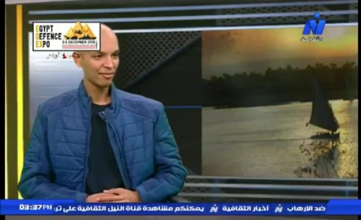
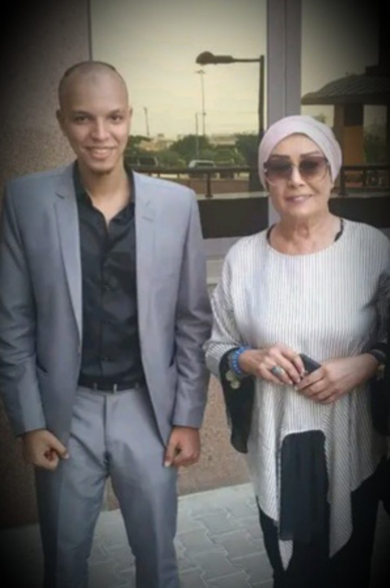
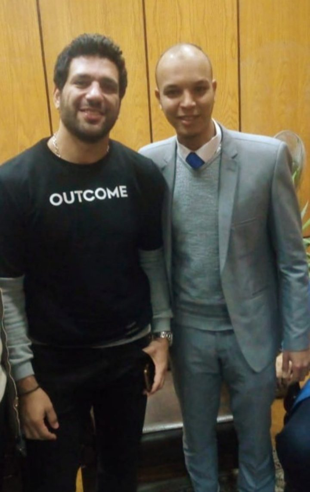
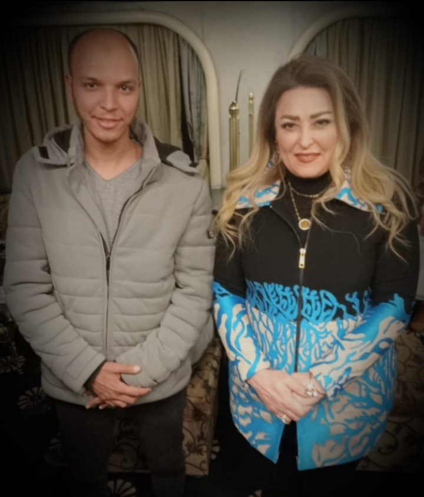
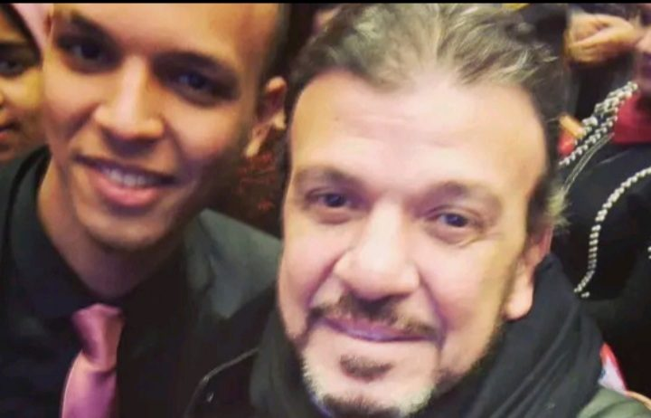

محمد علاء الدين جلال طهMohamed Alaa Eldin Galal Taha
أخصائي إعلام وعلاقات عامة بخبرة واسعة في الصحافة وتنظيم الفعاليات واستراتيجيات التسويق وإدارة الفروع. أجمع بين مهارات التواصل والقيادة والتفكير الإبداعي، وأتكيّف بسهولة مع بيئات العمل السريعة.A media and public relations specialist with wide experience in journalism, event planning, marketing strategy and branch operations. I bring strong communication and leadership skills, creative thinking, and the ability to adapt in fast-moving environments.

نبذةAbout
بدأت مسيرتي بالدراسة في قسم الإعلام بجامعة أسيوط، ثم عملت في الصحافة والعلاقات العامة وتنظيم الفعاليات، وانتقلت بعدها إلى إدارة المشروعات والفروع. أحب العمل الذي يجمع بين الناس والأفكار والتنفيذ الدقيق.I studied media at Assiut University, then worked in journalism, public relations and event management before moving into project and branch management. I enjoy work that brings together people, ideas and careful execution.
- المقرBased in
- أسيوط، مصرAssiut, Egypt
- اللغاتLanguages
- العربية (لغة أم) · الإنجليزية (جيد)Arabic (native), English (good)
- رخصة القيادةDriving license
- خاصة (سارية)Private (valid)
- الهواياتHobbies
- السفر، الرياضة، الغناءTraveling, sports, singing
الخبرات المهنيةProfessional experience
مدير مشروعProject Manager
الجمعية التعاونية للبناء والإسكان للعاملين باتحاد الإذاعة والتليفزيون بأسيوطCooperative Association for Housing and Construction for Employees of the Radio and Television Union, Assiutيوليو 2023 – أبريل 2025July 2023 – April 2025- إدارة وتنفيذ مشروعات الإسكان بالتعاون مع أعضاء الجمعية (مشروع أبراج الإعلاميين بمدينة أسيوط).Managed and delivered housing projects together with the association's members (the Media Professionals' Towers project in Assiut).
- التنسيق مع الجهات المعنية لضمان سير العمل بكفاءة وجودة عالية.Coordinated with the relevant authorities to keep work efficient and high quality.
- متابعة الجوانب المالية والإدارية لمختلف المشروعات.Monitored the financial and administrative side of each project.
مدير فرعBranch Manager
آخر ساعة – معجنات خاصةAkher Sa'a – Special Pastry- إدارة العمليات اليومية للفرع.Ran the branch's daily operations.
- قيادة الفريق لتحقيق أهداف المبيعات وتجاوزها.Led the team to meet and exceed sales targets.
- متابعة مستويات المخزون والتنسيق مع الموردين.Tracked stock levels and coordinated with suppliers.
المدير التنفيذيExecutive Director
جريدة الوسيط الدولية الإعلانيةAl-Waseet International Advertising Newspaper- الإشراف على العمل التحريري وخطط التسويق.Oversaw editorial operations and marketing plans.
- إدارة عملاء الإعلانات وضمان جودة المحتوى.Managed advertising clients and kept content quality high.
مدير العلاقات العامةPR Manager
جريدة الشرق المصريةAl-Sharq Egyptian Newspaper- بناء العلاقات الإعلامية والعامة.Built media and public relationships.
- تنظيم الفعاليات الصحفية ووضع استراتيجيات العلاقات العامة.Organized press events and developed PR strategies.
صحفيJournalist
العمل الصحفيPrint and event journalism- كتابة وتحرير المحتوى الصحفي والتحقيقات.Wrote and edited news content and investigative reports.
- تغطية الفعاليات والمناسبات المختلفة.Covered a wide range of events and occasions.
مؤسس ومنظّم فعالياتFounder & Event Organizer
افتتاحات مصر للفعالياتIftitahat Masr for Events- تنظيم فعاليات عامة وخاصة تشمل الافتتاحات وحفلات الزفاف.Organized public and private events, including openings and weddings.
- إدارة العلاقة مع العملاء وتنفيذ الفعالية بالكامل.Managed client relations and full event delivery.
المهاراتKey skills
مهارات مهنيةProfessional
- القيادة الإبداعيةCreative leadership
- إدارة المنتجاتProduct management
- حل المشكلات المعقدةComplex problem solving
- الإدارة الإعلاميةMedia management
- التسويق الاستراتيجيStrategic marketing
- التواصل والإقناعCommunication and persuasion
أدوات وأسلوب عملTools and working style
- Google Analytics
- العمل الجماعي والتعاونTeamwork and collaboration
- الحاسب الآلي: إدخال البيانات والطباعة والكتابةComputer skills: data entry, printing and typing
- المرونة والقدرة على التكيّفFlexibility and adaptability
التعليم والدوراتEducation and courses
ليسانس الآداب – تخصص الإعلامBachelor's degree in Media
جامعة أسيوط – دور يونيو 2019Assiut University – class of 2019
التقدير العام: جيد (72.10%)Overall grade: Good (72.10%)
- العلاقات العامة والتخطيط الاستراتيجي والتنفيذPublic Relations and Strategic Planning & Execution
- أساسيات التسويق الرقميDigital Marketing Fundamentalsالكلية الكندية الدوليةCanadian International College
- ورشة إنتاج الإعلان التليفزيونيTV Advertisement Production Workshopالجامعة الأمريكية بالقاهرةThe American University in Cairo
- حاضنة أعمال الشركات الصغيرة والمتوسطة – أسيوط، سبتمبر 2024SME business incubator, Assiut – September 2024أثر بالتعاون مع بلان إنترناشونال إيجيبتAthar with Plan International Egypt
لحظاتMoments



